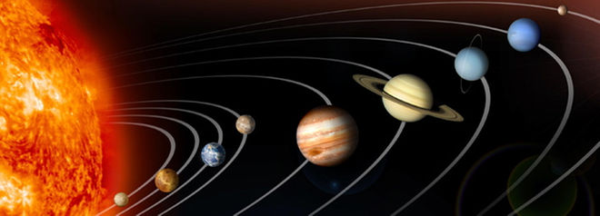

What is planet?
The definition of planet, since the word was coined by the ancient Greeks, has included within its scope a wide range of celestial bodies. Greek astronomers employed the term asteres planetai, "wandering stars", for star-like objects which apparently moved over the sky. Over the millennia, the term has included a variety of different objects, from the Sun and the Moon to satellites and asteroids.
By the end of the 19th century the word planet, though it had yet to be defined, had become a working term applied only to a small set of objects in the Solar System. After 1992, however, astronomers began to discover many additional objects beyond the orbit of Neptune, as well as hundreds of objects orbiting other stars. These discoveries not only increased the number of potential planets, but also expanded their variety and peculiarity. Some were nearly large enough to be stars, while others were smaller than Earth's moon. These discoveries challenged long-perceived notions of what a planet could be.

Ever since the discovery of Pluto in 1930, kids grew up learning about the nine planets of our solar system. That all changed starting in the late 1990s, when astronomers began to argue about whether Pluto was a planet. In a highly controversial decision, the International Astronomical Union ultimately decided in 2006 to call Pluto a "dwarf planet," reducing the list of "real planets" in our solar system to eight.
However, astronomers are now hunting for another planet in our solar system, a true ninth planet, after evidence of its existence was unveiled on Jan. 20, 2016. The so-called "Planet Nine," as scientists are calling it, is about 10 times the mass of Earth and 5,000 times the mass of Pluto.
The Evidence for 'Planet Nine' in Our Solar System (Gallery)
Here's the order of the planets, starting nearest the sun and working outward through the solar system: Mercury, Venus, Earth, Mars, Jupiter, Saturn, Uranus, Neptune - and Planet Nine.
Solar System Pictures: A Photo Tour
If you insist on including Pluto, then that world would come after Neptune on the list; Pluto is truly way out there, and on a wildly tilted, elliptical orbit (two of the several reasons it got demoted). Interestingly, Pluto used to be the eighth planet, actually. More on that below.
Terrestrial planets
The inner four worlds are called "terrestrial planets," because, like Earth, their surfaces are all rocky. Pluto, too, has a solid surface (and a very frozen one) but has never been grouped with the four terrestrials.
Jovian planets
The four large outer worlds - Jupiter, Saturn, Uranus, and Neptune - are known as the "Jovian planets" (meaning "Jupiter-like") because they are all huge compared to the terrestrial planets, and because they are gaseous in nature rather than having rocky surfaces (though some or all of them may have solid cores, astronomers say). According to NASA, "two of the outer planets beyond the orbit of Mars - Jupiter and Saturn - are known as gas giants; the more distant Uranus and Neptune are called ice giants." This is because, while the first two are dominated by gas, while the last two have more ice. All four contain mostly hydrogen and helium.
Dwarf planets
The IAU definition of a full-fledged planet goes like this: A body that circles the sun without being some other object's satellite, is large enough to be rounded by its own gravity (but not so big that it begins to undergo nuclear fusion, like a star) and has "cleared its neighborhood" of most other orbiting bodies. Yeah, that's a mouthful.
The problem for Pluto, besides its small size and offbeat orbit, is that it shares its space with lots of other objects in the Kuiper Belt, beyond Neptune. Still, the demotion of Pluto remains controversial.
The IAU planet definition puts other small, round worlds in the dwarf planet category, including the Kuiper Belt objects Eris, Haumea, and Makemake.
Also now a dwarf planet is Ceres, a round object in the Asteroid Belt between Mars and Jupiter. Ceres was actually considered a planet when discovered in 1801 and then later deemed to be an asteroid. Some astronomers like to consider Ceres as a 10th planet (not to be confused with Nibiru or Planet X), but that line of thinking opens up the possibility of there being 13 planets, with more bound to be discovered.